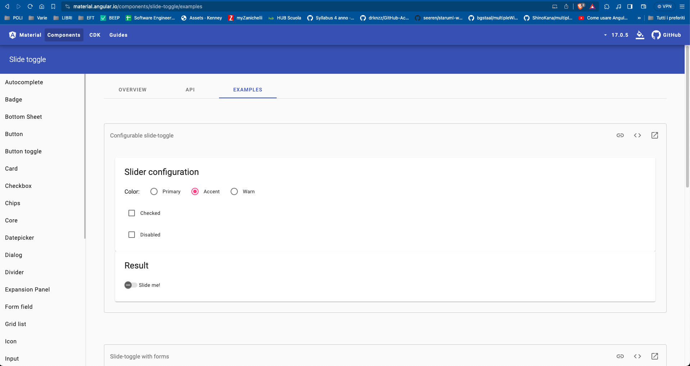
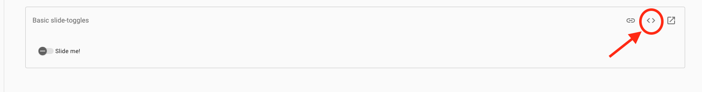
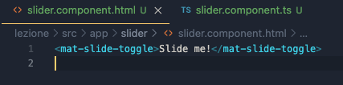
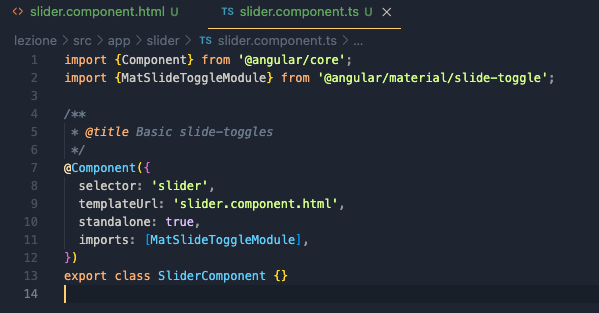

Angular Material
Angular Material è un framework CSS realizzato da Google, che permette di avere una serie di componenti già pronti e personalizzabili, come accadeva con Bootstrap.
Il sito di riferimento di Angular Material è il seguente: https://material.angular.io/
Installare Angular Material
Aprite la pagina al seguente link: https://material.angular.io/guide/getting-started
Per installare Angular Material nel vostro progetto usate il seguente comando nel terminale:
ng add @angular/material
Il terminale vi chiederà le seguenti cose:
- Vuoi proseguire con l’installazione? Yes
- Choose a prebuilt theme name, or "custom" for a custom theme: Scegliete quello che preferite
- Set up global Angular Material typography styles? Yes
- Include the Angular animations module? Include and enable animations
Una volta fatto ciò, attendete che il terminale finisca di scaricare e installare Angular Material e il processo di installazione sarà finito.
Usare un componente di Angular Material
Per usare un componente di Angular Material nel nostro progetto occorre fare le seguenti cose:
- Scegliere un componente dalla seguente pagina web: https://material.angular.io/components/categories
Io userò uno slide toggle come esempio (https://material.angular.io/components/slide-toggle/overview ) - Andare sulla pagina esempi del componente che abbiamo scelto

In questa pagina ci sono esempi di utilizzo del componente che abbiamo scelto. - Una volta trovato un esempio che ci torna utile, selezioniamo dalle icone in alto a destra quella centrale <>.

Così facendo vi si aprirà un menù che contiene tutto il codice HTML, CSS e TypeScript che servono per utilizzare il componente contenuto nell’esempio. - Creare un nuovo componente all’interno del nostro progetto e andare a inserire il codice che compare al punto precedente all’interno dei file del componente che abbiamo appena creato nel progetto


Cambiate il templateUrl per poter utilizzare il file HTML del componente, sennò non funziona nulla.
- Ora potete usare il vostro componente all’interno del progetto!